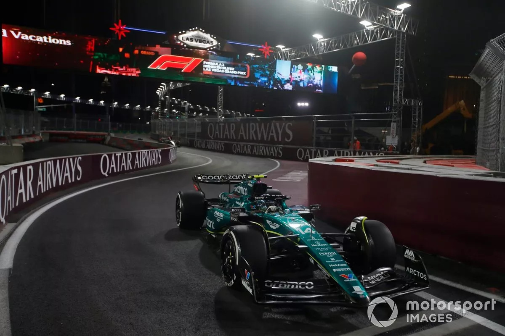

AMR23
El AMR23 es el coche que volvió a dar esperanzas a los esquizofrénicos alonsistas.
Fue un gran salto con respecto a su predecesor y Fernando Alonso supo exprimir al máximo
las herramientas que le brindó el coche.

Monocasco compuesto de fibra de carbono con paneles laterales anti-intrusión de Zylon
Suspensión
Trapecios de aluminio con trapecios, biela y biela de empuje compuestos de fibra de carbono. Muelles de torsión, amortiguadores y barra estabilizadora montados en el chasis
Llantas
BBS delantera: 18" x 13,2", trasera: 18" x 16,9"
Embrague
AP Racing
Neumáticos
Pirelli P Zero
Sistema de frenado
Pinzas de freno Brembo y sistema brake-by-wire de diseño propio con discos y pastillas de fibra de carbono
Características
ChasisMonocasco compuesto de fibra de carbono con paneles laterales anti-intrusión de Zylon
Suspensión
Trapecios de aluminio con trapecios, biela y biela de empuje compuestos de fibra de carbono. Muelles de torsión, amortiguadores y barra estabilizadora montados en el chasis
Llantas
BBS delantera: 18" x 13,2", trasera: 18" x 16,9"
Embrague
AP Racing
Neumáticos
Pirelli P Zero
Sistema de frenado
Pinzas de freno Brembo y sistema brake-by-wire de diseño propio con discos y pastillas de fibra de carbono
Electrónica
Unidad única de la FIA con cableado eléctricos de diseño propio
Peso total
798 kg (piloto incluido, sin combustible). Distribución del peso entre 44,5 y 46,0%
Proveedor de la unidad de potencia
Mercedes HPP (Mercedes AMG High Performance Powertrains)
Motor
Mercedes-AMG F1 M12 E Performance. 1.6L v6 Turbo + sistema de recuperación de
Transmisión
Mercedes F1 de 8 velocidades, semiautomática